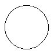
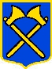
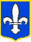

Acouo un quiz auve d's înmages
Clyiquez sus la bouonne rêponse
Tchestchion 1. Clyiquez sus la piéche dg'iun pénîn!
Tchestchion 2. Clyiquez sus quat' heuthes un quart!
Tchestchion 3. Clyiquez sus la boête!

Tchestchion 4. Clyiquez sus l'êtchusson d'St. Hélyi!


Tchestchion 5. Clyiquez sus lé trais!
Tchestchion 6. Clyiquez sus la c'mînse!
Ous avez êprouvé
fais Ous avez gângni
fais